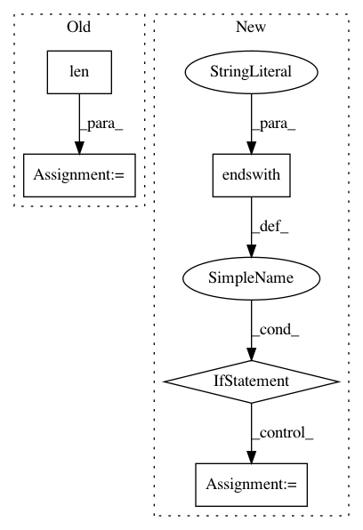

6316edd2aacd0d2a072a07868971049d3f554d58,wandb/internal/file_stream.py,CRDedupeFilePolicy,process_chunks,#CRDedupeFilePolicy#Any#,75
Before Change
else:
content.append(line)
chunk_id = self._chunk_id
self._chunk_id += len(content)
if content and content[-1].endswith("\r"):
self._chunk_id -= 1
return {
"offset": chunk_id,
After Change
line = line.split("\r")[-1]
if line:
// check for cursor up control character
if line.endswith("\x1b\x5b\x41"):
if flag:
ret.pop()
flag = False
else:
ret.append(tstamp + " " + line + os.linesep)
flag = True
chunk_id = self._chunk_id
self._chunk_id += len(ret)
return {
"offset": chunk_id,
In pattern: SUPERPATTERN
Frequency: 3
Non-data size: 5
Instances
Project Name: wandb/client
Commit Name: 6316edd2aacd0d2a072a07868971049d3f554d58
Time: 2020-08-25
Author: farizrahman4u@gmail.com
File Name: wandb/internal/file_stream.py
Class Name: CRDedupeFilePolicy
Method Name: process_chunks
Project Name: tensorflow/tensorflow
Commit Name: 448e080c752a1b5f54c422401b41e824b0274a91
Time: 2020-11-17
Author: crccw@google.com
File Name: tensorflow/python/distribute/multi_process_lib.py
Class Name:
Method Name: _set_spawn_exe_path
Project Name: mynlp/ccg2lambda
Commit Name: 66a06524eba0b22d14204baeb2ca6d4c9db7d1d0
Time: 2017-05-12
Author: pascual@nii.ac.jp
File Name: scripts/semantic_types.py
Class Name:
Method Name: convert_coq_to_nltk_type